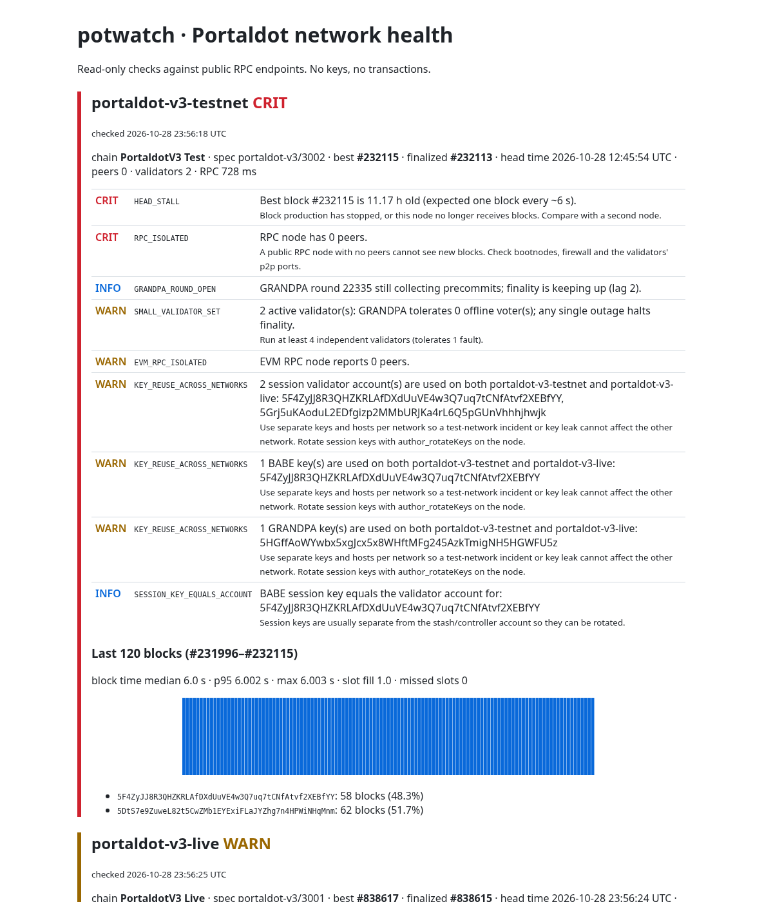

Know when a Portaldot network is unhealthy, why it is unhealthy, and prove it on-chain.
Portaldot Hacker House 2026 · Node Operations & Tooling
| Network | Verdict | What potwatch found |
|---|---|---|
| PortaldotV3 Test | CRIT | Head stuck at #232115 for 11.2 h; RPC and EVM nodes have 0 peers |
| PortaldotV3 Live | WARN | 1 peer; 2 validators (GRANDPA tolerates 0 faults) |
| Both | WARN | The same 2 validator accounts, 1 BABE key and 1 GRANDPA key are active on both networks |
Before the stall, the 120 blocks were perfectly regular (6.0 s median, 58/62 author split). Production stopped abruptly, with no slow decline. That points to a network or host event, not a failing validator.

Deployed and attested end to end on a local chain with the V3 chain id; public testnet deployment pending testnet tokens
Why Portaldot
Roadmap